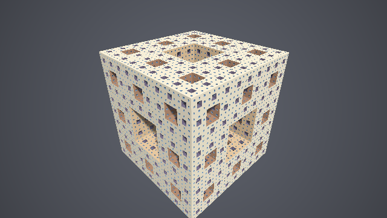
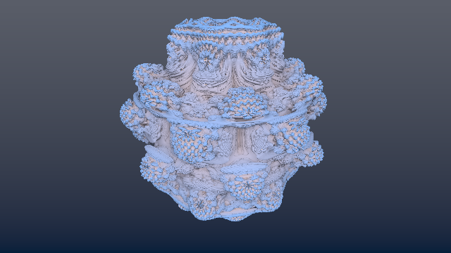
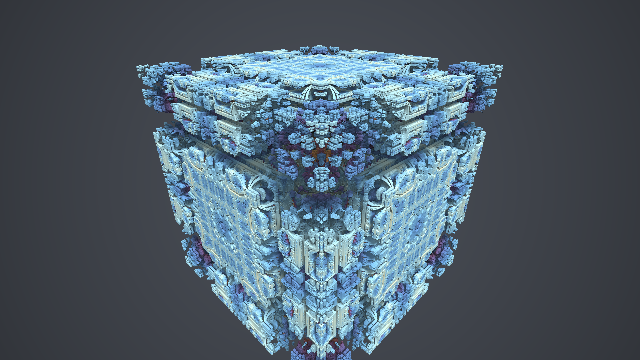
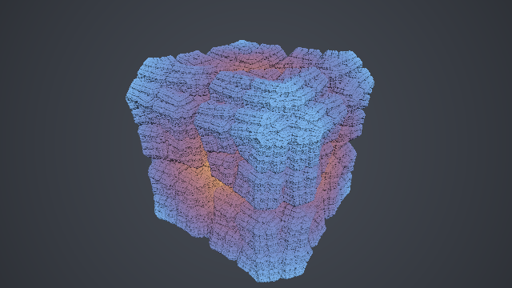

第 13 章 フラクタル
レイマーチングは、ポリゴンでは表現しにくい、無限に細かい構造を持つ形状（フラクタル）を描くのに向いている。フラクタルの SDF は、空間の変換を反復的に適用することで作れるものが多い。この章では、代表的なフラクタルとして、メンガーのスポンジ、マンデルバルブ、マンデルボックスを描き、最後に折り返しによってフラクタルを作る一般的な方法（KIFS）を紹介する。
メンガーのスポンジ
構成
メンガーのスポンジは、次の操作を無限に繰り返して得られる立体である。
立方体を 3 × 3 × 3 = 27 個の小さな立方体に分ける。
各面の中央の 6 個と、全体の中心の 1 個の、合わせて 7 個を取り除く。
残った 20 個の立方体のそれぞれに、同じ操作を施す。
2 の操作は、立方体から「3 方向に貫通する十字形の穴」をくり抜くことと同じである。そして 3 の操作は、第 4 章の空間の繰り返しを使えば、すべての小さな立方体に対して一度に適用できる。
SDF
次の関数は、Quilez による実装に基づくメンガーのスポンジの SDF である。
18// メンガーのスポンジの SDF。戻り値は (距離, 最後にくり抜いた階層)
19vec2 sdMenger(vec3 p)
20{
21 float d = sdBox(p, vec3(1.0));
22 float scale = 1.0;
23 float level = 0.0;
24 for (int i = 0; i < ITERATIONS; i++) {
25 // 1 辺 2 / scale の立方体で空間を繰り返す
26 vec3 a = mod(p * scale, 2.0) - 1.0;
27 scale *= 3.0;
28 // 3 方向に貫通する十字形の穴までの距離
29 vec3 r = abs(1.0 - 3.0 * abs(a));
30 float da = max(r.x, r.y);
31 float db = max(r.y, r.z);
32 float dc = max(r.z, r.x);
33 float c = (min(da, min(db, dc)) - 1.0) / scale;
34 if (c > d) {
35 d = c; // 穴の方が表面を決めている
36 level = float(i + 1);
37 }
38 }
39 return vec2(d, level);
40}
最初に 1 辺 2 の立方体の SDF を d とし、ループの 1 回ごとに 1 段階細かい穴をくり抜く。scale は各段階の縮尺で、1、3、9、27、…と 3 倍ずつ大きくなる。
a = mod(p * scale, 2.0) - 1.0は、空間を 1 辺 \(2/\mathrm{scale}\) の立方体のセルに分け、セル内の局所座標を \([-1, 1)\) の範囲で表したものである。modの性質から、セルの境界が \(a = 0\)、セルの中心が \(|a| = 1\) に対応する。r = abs(1.0 - 3.0 * abs(a))の各成分は、その座標がセルの中央の 1/3 にあるとき（\(|a| > 2/3\)）に 1 より大きくなる。十字形の穴は、2 つ以上の座標がセルの中央の 1/3 にある領域である。
max(r.x, r.y)などの 3 つの値の最小値から 1 を引いた値は、点がこの穴の内側にあるとき正、外側にあるとき負になる。これをscaleで割ってワールド座標の尺度に戻したものがcである。d = max(d, c)は、第 4 章の積集合である。cは「穴の外側」を内側とする SDF なので、積をとると穴がくり抜かれる。
ループの回数 ITERATIONS が、フラクタルの深さを決める。4 回で最も小さな穴の大きさは元の立方体の \(1/81\) になり、画面上ではほぼ 1 ピクセルに達する。この SDF は厳密な距離ではなく距離の下界である。
13_menger.frag をダウンロード ｜ ブラウザーで実行

13_menger.frag の実行結果。穴の階層ごとに、第 7 章の余弦関数によるパレットで色を変えている。
フラクタルでは、表面がどこまでも細かいため、影と AO の計算が重要になる。このサンプルでは、AO の代わりに、レイマーチングの反復回数を使った簡易的な遮蔽を使っている。細い隙間の近くを通るレイは反復回数が多くなるので、反復回数が多いピクセルほど暗くしている。追加の SDF の評価が不要なので、計算の重いフラクタルに向いている。
マンデルバルブ
マンデルブロ集合の 3 次元への拡張
マンデルブロ集合は、複素数 \(c\) について次の漸化式を反復したとき、\(|z_n|\) が発散しない \(c\) の集合である。
複素数の 2 乗は、極形式で「絶対値を 2 乗し、偏角を 2 倍する」操作である。White と Nylander は、これを 3 次元の極座標に拡張し、点 \(\mathbf{z} = (r, \theta, \phi)\) の \(n\) 乗を次のように定義した。
ここでは \(y\) 軸を極軸とし、\(\theta\) を \(y\) 軸からの角度、\(\phi\) を \(xz\) 平面内の角度としている。この \(n\) 乗を使って漸化式 \(\mathbf{z}_{k+1} = \mathbf{z}_k^n + \mathbf{c}\) を反復し、発散しない点 \(\mathbf{c}\) の集合をマンデルバルブと呼ぶ。\(n = 8\) のときに、最もよく知られた形になる。
距離推定関数
マンデルバルブには厳密な SDF が知られていない。その代わりに、次の距離推定関数（distance estimator、DE）を使う。
\(\mathbf{z}'_k\) は \(\mathbf{z}_k\) の \(\mathbf{c}\) による微分で、その大きさは漸化式 \(|\mathbf{z}'_{k+1}| \approx n |\mathbf{z}_k|^{n-1} |\mathbf{z}'_k| + 1\) で近似できる。この式は、集合の外側で定義されるポテンシャル関数 \(G\) について \(G / |\nabla G|\) が集合までの距離の近似になることから導かれる（Hubbard と Douady による複素力学系の結果に基づく）。\(|\mathbf{z}_k|\) が十分大きくなった（発散した）時点で反復を打ち切り、そのときの値から距離を推定する。
13// マンデルバルブの距離推定関数。trap には軌道が原点に最も近づいた距離を返す
14float sdMandelbulb(vec3 c, out float trap)
15{
16 vec3 z = c;
17 float dr = 1.0; // |dz/dc| の近似
18 float r = length(z);
19 trap = r;
20 for (int i = 0; i < ITERATIONS; i++) {
21 if (r > 2.0) {
22 break; // 発散した
23 }
24 // 極座標で z を POWER 乗する
25 float theta = acos(clamp(z.y / r, -1.0, 1.0)) * POWER;
26 float phi = atan(z.z, z.x) * POWER;
27 dr = POWER * pow(r, POWER - 1.0) * dr + 1.0;
28 z = pow(r, POWER) *
29 vec3(sin(theta) * cos(phi), cos(theta), sin(theta) * sin(phi)) + c;
30 r = length(z);
31 trap = min(trap, r);
32 }
33 return 0.5 * log(r) * r / dr;
34}
距離推定関数は近似なので、場所によっては真の距離を過大評価することがある。不具合が見られる場合は、第 9 章で説明したように歩幅を小さくする。
軌道トラップによる色付け
漸化式の反復の間に \(\mathbf{z}_k\) がたどる点の列を軌道と呼ぶ。軌道が原点や特定の図形に最も近づいたときの距離（軌道トラップ）は、表面上の場所によって複雑に変化する。サンプルでは、軌道が原点に最も近づいた距離 trap を使って色を付けている。
13_mandelbulb.frag をダウンロード ｜ ブラウザーで実行

13_mandelbulb.frag の実行結果
マンデルボックス
構成
マンデルボックスは、Lowe（2010）が考案したフラクタルで、建築物や機械のような直線的で入り組んだ構造を持つ。マンデルバルブが複素数の 2 乗を 3 次元に拡張したものであったのに対し、マンデルボックスは、次の 3 つの操作を繰り返すことで作られる。
操作 |
内容 |
|---|---|
ボックスフォールド |
各座標が範囲 \([-1, 1]\) の外に出ていれば、境界 \(\pm 1\) で折り返す。第 4 章の対称化（ |
スフィアフォールド |
原点からの距離 \(r\) に応じて点を動かす。\(r\) が内側の半径 \(r_{\min}\) より小さければ一定の倍率で拡大し、\(r_{\min}\) と外側の半径 \(r_{\text{fix}}\) の間にあれば、外側の球面について反転させる（\(\mathbf{z} \leftarrow (r_{\text{fix}}^2 / r^2)\, \mathbf{z}\)）。 |
拡大と平行移動 |
拡大率 \(s\) を掛け、元の点 \(\mathbf{c}\) を加える（\(\mathbf{z} \leftarrow s\mathbf{z} + \mathbf{c}\)）。 |
21// ボックスフォールド: 範囲 [-1, 1] の外に出た座標を、境界で折り返す
22vec3 boxFold(vec3 z)
23{
24 return clamp(z, -1.0, 1.0) * 2.0 - z;
25}
26
27// スフィアフォールド: 原点に近い点を外側へ、ある範囲の点を球面について反転させる。
28// 点を k 倍するので、距離推定のための導関数の大きさ dr も k 倍する
29void sphereFold(inout vec3 z, inout float dr)
30{
31 float r2 = dot(z, z);
32 if (r2 < MIN_RADIUS2) {
33 float k = FIXED_RADIUS2 / MIN_RADIUS2; // 内側の球の中は一定の倍率で拡大
34 z *= k;
35 dr *= k;
36 } else if (r2 < FIXED_RADIUS2) {
37 float k = FIXED_RADIUS2 / r2; // 球面についての反転
38 z *= k;
39 dr *= k;
40 }
41}
距離推定関数
距離推定関数の考え方は、マンデルバルブと同じである。反復の間、点の位置 \(\mathbf{z}\) に加えて、\(\mathbf{z}\) を元の点で微分したものの大きさ \(dr\) を追跡し、最後に \(|\mathbf{z}| / |dr|\) を距離の推定値とする。
ボックスフォールドは、折り返しなので長さを変えない。\(dr\) はそのままでよい。
スフィアフォールドで点を \(k\) 倍するときは、\(dr\) も \(k\) 倍する（反転の場合は厳密には倍率が場所によって変わるが、\(k\) 倍で近似する）。
拡大と平行移動では、\(dr \leftarrow |s|\, dr + 1\) とする。\(+1\) は、元の点 \(\mathbf{c}\) を加えることによる寄与である。拡大率が負の場合もあるので、絶対値を使う。
43// マンデルボックスの距離推定関数。trap には軌道が原点に最も近づいた距離の 2 乗を返す
44float sdMandelbox(vec3 p, float scale, out float trap)
45{
46 vec3 z = p;
47 float dr = 1.0; // 導関数の大きさの近似
48 trap = 1e10;
49 for (int i = 0; i < ITERATIONS; i++) {
50 z = boxFold(z);
51 sphereFold(z, dr);
52 z = scale * z + p; // 拡大と平行移動
53 dr = dr * abs(scale) + 1.0;
54 trap = min(trap, dot(z, z));
55 }
56 return length(z) / abs(dr);
57}
マンデルバルブは、極座標の変換と 3 角関数、べき乗を毎回の反復で計算する必要があった。マンデルボックスの反復は、比較、乗算、加算だけでできているので、計算が軽い。
13_mandelbox.frag をダウンロード ｜ ブラウザーで実行

13_mandelbox.frag の実行結果（拡大率 2.5 付近）
パラメーターによる形の変化
マンデルボックスの形は、主に拡大率 \(s\) で決まる。サンプルの拡大率 2〜3 では、全体が立方体に近い形になり、各面に入り組んだ構造が現れる。拡大率を負にする（例えば \(-1.5\)）と、まったく異なる形になり、内部に入り込んだ視点からの描画に向いた、迷路のような空間が得られる。スフィアフォールドの 2 つの半径を変えると、構造の丸みが変わる。サンプルでは拡大率を時間とともにゆっくり変えているので、形の変化を確かめられる。
色は、マンデルバルブと同じく軌道トラップ（反復の間に \(|\mathbf{z}|^2\) がとった最小値）で付けている。
折り返しによるフラクタル（KIFS）
考え方
マンデルボックスのボックスフォールドや、第 4 章の対称化のように、空間を平面で折り返す操作は、フラクタルを作る強力な道具になる。折り返し、回転、拡大と平行移動を繰り返してフラクタルを作る方法を、一般に KIFS（kaleidoscopic iterated function system、万華鏡的な反復関数系）と呼ぶ。万華鏡の鏡のように、空間を何枚もの平面で折り返すことから、この名前がある。
KIFS の 1 回の反復は、次の操作からなる。
折り返し:
absで 3 つの座標平面について折り返す。さらに、座標を大きい順に並べ替えると、3 つの対角面（\(x = y\) など）についても折り返したことになる。回転: 折り返した空間を回転させる。回転の角度を変えると、形が大きく変化する。
拡大と平行移動: ある中心 \(\mathbf{o}\) を基準に、拡大率 \(s\) で拡大する（\(\mathbf{p} \leftarrow s\mathbf{p} - (s - 1)\mathbf{o}\)）。
反復を終えたら、小さな基本形状（箱や球）の SDF を評価し、拡大率の積 \(s^n\) で割って、元の尺度の距離に戻す。折り返しと回転は距離を縮めないので、得られる値は距離の下界になり、スフィアトレーシングで正しく描ける。
28// KIFS の距離推定関数
29float sdKIFS(vec3 p, float angle)
30{
31 mat2 r1 = rot(angle);
32 mat2 r2 = rot(0.7 * angle);
33 float scale = 1.0; // ここまでの拡大率の積
34 for (int i = 0; i < ITERATIONS; i++) {
35 // 3 つの座標平面で折り返す
36 p = abs(p);
37 // x >= y >= z となるように並べ替える。これは 3 つの対角面での折り返しに当たる
38 if (p.x < p.y) p.xy = p.yx;
39 if (p.x < p.z) p.xz = p.zx;
40 if (p.y < p.z) p.yz = p.zy;
41 // 回転させる
42 p.xy = r1 * p.xy;
43 p.yz = r2 * p.yz;
44 // OFFSET を中心に拡大する
45 p = SCALE * p - OFFSET * (SCALE - 1.0);
46 scale *= SCALE;
47 }
48 // 最後に小さな箱を置き、拡大率の積で割って元の尺度の距離に戻す
49 return sdBox(p, vec3(1.0)) / scale;
50}
13_kifs.frag をダウンロード ｜ ブラウザーで実行

13_kifs.frag の実行結果
KIFS の応用
この章の前半のメンガーのスポンジも、折り返しと拡大の繰り返しとして書き直せる。また、折り返しの平面（正四面体や正十二面体の対称面など）、回転の角度、拡大の中心を変えることで、シェルピンスキーの四面体をはじめ、多様なフラクタルを同じ枠組みで作れる。パラメーターを時間とともに変えると、形が連続的に変化するので、デモシーンの作品でよく使われる。
フラクタルを描くときの注意
フラクタルの SDF は反復計算を含むため、評価に時間がかかる。また、表面が無限に細かいため、どこまで細かく描くかを決める必要がある。本章のサンプルでは、第 9 章で説明した次の工夫を使っている。
距離に応じた閾値 \(f < \varepsilon t\) を使い、遠くの細かい構造の計算を省く。
マンデルバルブでは、法線を求める差分の幅も距離に比例させ（
calcNormalの引数t）、遠くの表面の法線がノイズのように乱れるのを防ぐ。マンデルバルブでは外接球をバウンディングボリュームとして使い、外接球の外では反復計算を省く。